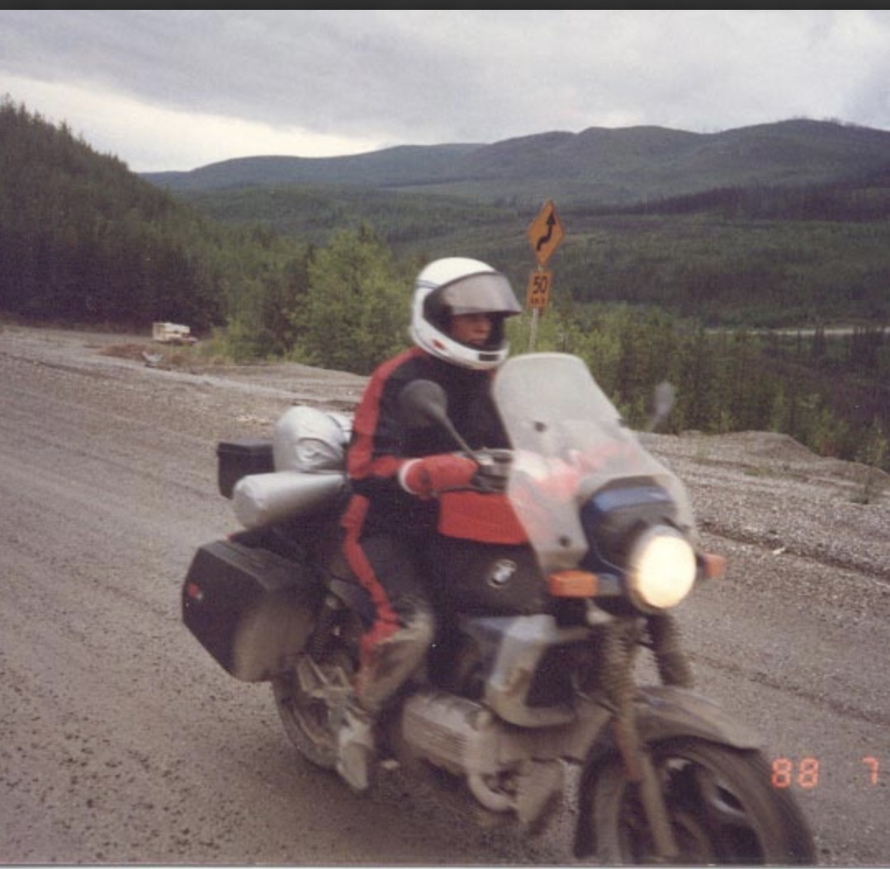

1,500 Miles on the Flying Brick

The first sign of trouble was the manual. When I picked up the Clymer for the K75, it was roughly double the thickness of the one for my 1991 Honda Nighthawk. I chose to read that as thorough instead of ominous. Fifteen hundred miles later, I can report that I have never turned a wrench more on any vehicle I've owned, and that the manual was, in fact, ominous.
I love this bike. I also now know it intimately, one bolt at a time. Here's the tour of the first 1,500 miles.
The fuel system, all of it
First up was the entire fuel system, because a bike that's been sitting since 2020 doesn't really have gas in the tank so much as it has a memory of gas. The lines had gone, just gone, the pump had opinions, the filter was doing its best impression of a melted object, and the bottom of the tank was full of rust. So: new fuel lines, new fuel pump, new fuel filter, and a long afternoon cleaning the tank out. Nothing exotic, just a lot of it.
The charging system, and the worst place to lose it
Next was the charging system, which is where the story gets good. It started innocently with the starter, I thought it was the starter itself or the switch, then moved to the alternator. I tried to be economical and just replace the brushes. In the process I stripped a bolt, fought it for a while, said some things I'm not proud of, and finally admitted defeat and replaced the whole alternator.
But not before it stranded me in the middle of metro Atlanta, Mechanicsville, which, if you've ever driven it, is the single worst place for a motorcycle to quietly stop making electricity. Turns out I wasn't putting out enough voltage to keep her running, a diagnosis I arrived at the way all the great ones happen: on the road and then shortly off the road. The fix on the spot was a push start, the push start needed a second person, and the second person available to me was a gentleman experiencing homelessness who agreed to help in exchange for a Mango Arizona and a pack of Newport 100s. Fair trade. Best thirteen dollars I've spent on this bike, and I have spent a lot on this bike.
⚠ ALARM · CHARGING FAULT BUS VOLTAGE .... 11.9 V (LOW) LOCATION ....... SOMEWHERE ON THE PERIMETER, ATLANTA GA STATUS ......... BIKE STOPPED RESOLUTION ..... 1× MANGO ARIZONA, 1× NEWPORT 100s, 1× PUSH START
The master cylinder, twice
With power sorted, I turned to the brakes. The front master cylinder started to leak, so I rebuilt it. It leaked again. So I replaced it. There is a lesson buried in there about knowing when a rebuild kit is genuine optimism and when it's just a slower way to buy the new part, and it is a lesson I apparently need to learn on a recurring schedule.
Where she stands
So that's the first 1,500 miles: fuel system, cooling fan, alternator, master cylinder, and a running crash course in what German engineers were thinking in 1986. The bike is not finished with me. Right now she's leaving a few drops of oil after every ride, which the internet agree is the rear main seal. That's the next job, along with a new clutch cable and clutch seal while I'm in there, because on a bike like this you are never in there for just one thing.
I love this bike. I want that on the record before the next part, which is that I would love, deeply, to put the wrench down for a little while. I won't. I bought a 37-year-old flying brick specifically because I like things that have a good chance of breaking on me, and Ines has never once let me down on that promise. Fifteen hundred miles in, we finally understand each other.
Rear main seal diary coming, once I stop finding oil underneath her. Could be a while.